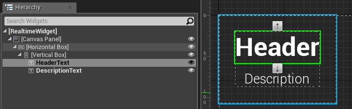
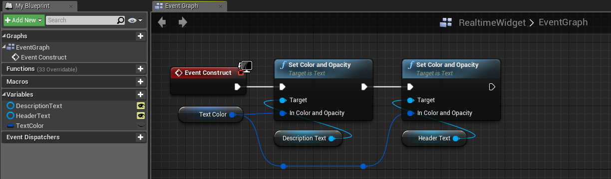
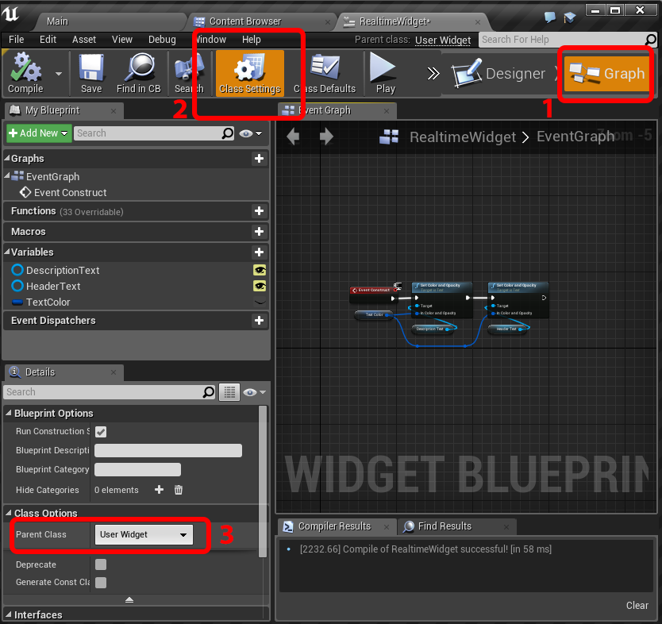
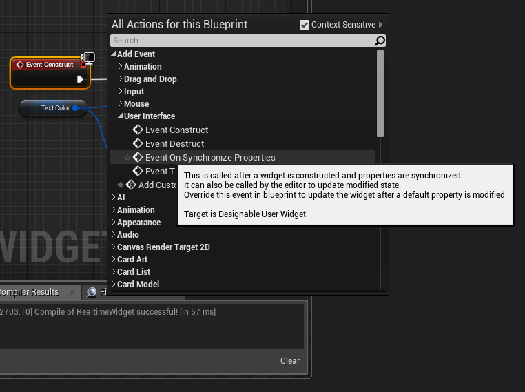
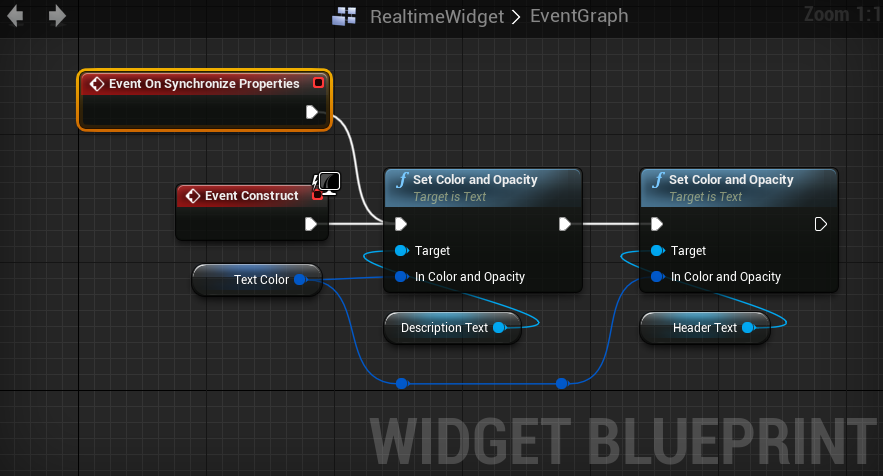
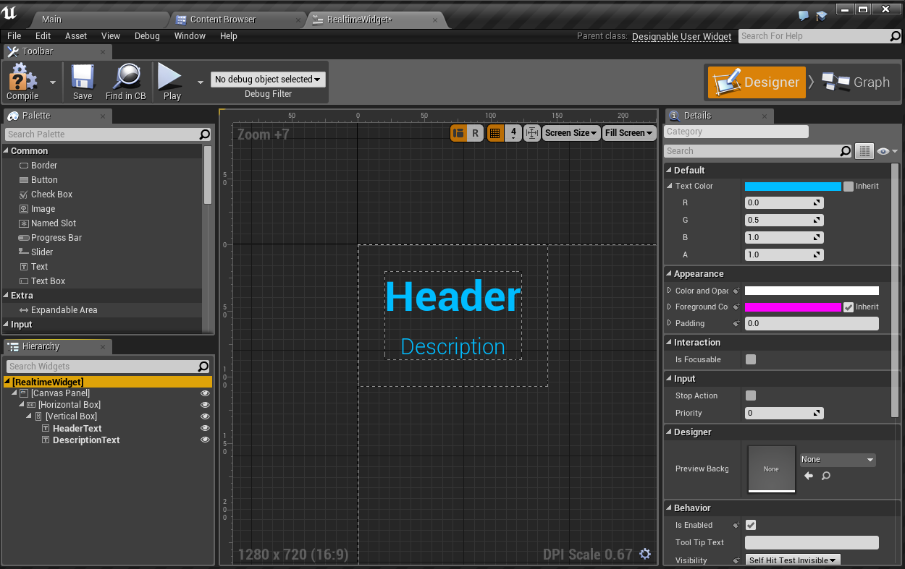
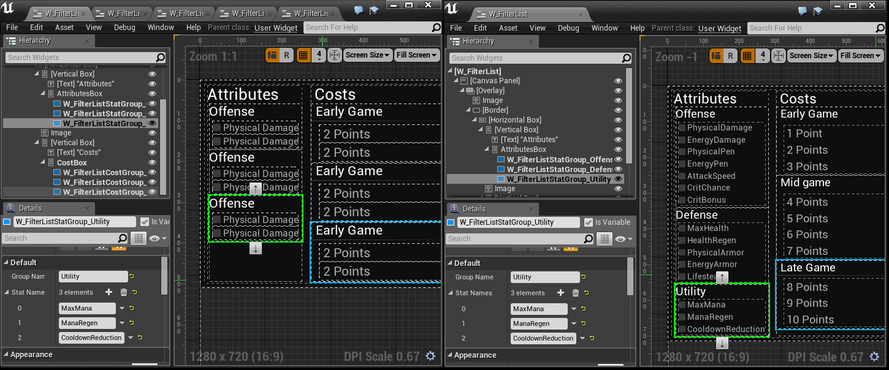

UMG Previewing custom UserWidgets in realtime
Contents
Overview
This tutorial shows you how to enable realtime preview for custom Blueprint-based Widgets inside the UMG editor.
Main purpose of this feature is to allow creation of generic blueprint UserWidgets, that will react to default property changes inside the editor, just like the C++ widgets.
NOTE: This feature is very experimental. Backup your project first.
Requirements
Minimal amount of C++ programming is required.
Introduction
How updates to built-in Widgets work
When a built-in Widget is created, or its default properties are changed, the Widget::SynchronizeProperties() method is called. This method is responsible for applying the provided properties onto the Widget internals, allowing realtime preview. Each Widget has own implementation of this method.
How to make it work with blueprints
To make realtime previewing work in Blueprint Widgets, we need to run a Blueprint script when SynchronizeProperties() is called.
To achieve this, we will create a custom C++ UUserWidget with a new OnSynchronizeProperties() event that can be implemented in Blueprint. We will call this event from C++, when SynchronizeProperties() method is called by the engine.
Implementation
C++ UserWidget subclass
Create a C++ subclass of UserWidget, lets call it DesignableUserWidget
1. Add a blueprint event called OnSynchronizeProperties()
class MYPROJECT_API UDesignableUserWidget : public UUserWidget
{
GENERATED_BODY()
public:
/**
* This is called after a widget is constructed and properties are synchronized.
* It can also be called by the editor to update modified state.
* Override this event in blueprint to update the widget after a default property is modified.
*/
UFUNCTION(BlueprintNativeEvent, Category = "User Interface")
void OnSynchronizeProperties();
};
void UDesignableUserWidget::OnSynchronizeProperties_Implementation()
{
// Override this event in Blueprint
}
2. Override SynchronizeProperties() and call the OnSynchronizeProperties() event
class MYPROJECT_API UDesignableUserWidget : public UUserWidget
{
// ...
public:
virtual void SynchronizeProperties() override;
};
void UDesignableUserWidget::SynchronizeProperties() {
Super::SynchronizeProperties();
OnSynchronizeProperties();
}
3. Compile the project
After compiling, you can now change the class of your Widget Blueprints from UserWidget to DesignableUserWidget.
Implementing realtime preview in Blueprint
Example Widget
As a basic example, lets have a widget that consists of two text labels: 
The widget contains a custom TextColor variable, which applies chosen color to labels in the Construct event: 
Changing the default value of TextColor does not change the labels colors at this point, as the Editor doesn't run the Widget Blueprint.
Adding realtime preview
Let's start by changing the class to our DesignableUserWidget: 
Compile the blueprint and add the new OnSynchronizeProperties event just above the Construct event: 
Link the OnSynchronizeProperties event to nodes in your Construct event. 
The OnSynchronizeProperties event will be run inside of the editor, every time you update default properties. 
Now you can change default properties in the editor and observe the changes being applied to your widget in realtime!
More complex example
Here is a popup window containing multiple generic custom list widgets. Each custom list generates a title text and list of buttons. The custom list widgets have custom default properties for the list title string and an array of button title strings. 
Without the realtime view, only manually added placeholder values are displayed. With realtime preview, the custom list widgets construct and configure all the neccessary widgets.
Final notes
This is a very useful but also very experimental feature, so please backup your project first.